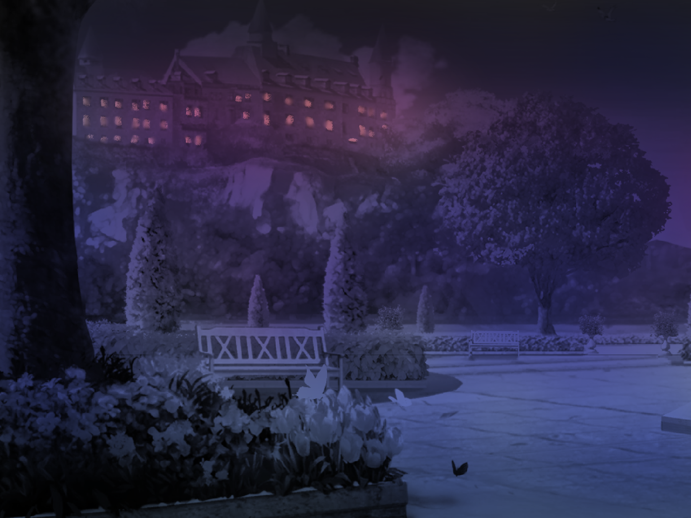

Say nothing
⋆˙⟡♡ Princess's Affinity: 80%

You are both silent as you let the tension burn.
This only upsets her more.
As a way to show you your station, she commands you to take the first sip.
You oblige and bring the cup to your lips.
The glass is cool but the alcohol leaves an almost phantom burn in your mouth.
It is somewhat sweet, somewhat bitter, somewhat warm...
warm
...
very warm
...
hot even
The air is suffocating.
Did the wind get dryer?
The lights seem brighter.
The ground feels like jelly or is that your legs?
Disoriented, you stumble and collapse to the ground.
You’re vision turns blurry as a figure stands over you.
She seems to be yelling at you with concern.
Eventually, your consciousness fades to black.
˚ʚ♡ɞ˚ Return to the beginning